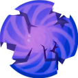

<html lang="en">
  <head>
    <title>Portfolio</title>
    <link rel="stylesheet" href="styles.css" />
    <link
      rel="icon"
      type="image/png"
      href="images/favicon-32x32.png"
      sizes="32x32"
    />
    <link rel="icon" type="image/png" href="favicon-16x16.png" sizes="16x16" />
  </head>
</html>

<body>
  <div id="nav-container">
    <div id="navbar">
      <a class="button" href="/index.html">Home</a>
      <a class="button" href="/index.html#projects">Projects</a>
      <a class="button" href="/resume.html">Resume</a>
      <a class="button" href="/index.html#contact">Contact</a>
    </div>
  </div>

  <div id="img-hero">
    
  </div>
  <section id="project-description">
    <div class="item">
      <div id="item-image">
        
      </div>
      <div id="item-info">
        <h2>Duration: February -> May 2025</h2>
        <a href="https://mr-hekler.itch.io/trampolinko"
          ></a>
        <!-- <a
          href="https://play.google.com/store/apps/details?id=com.MassDiGI.TeamCottonCandy&hl=en_US"
          ></a> -->
        <h1>About the Game</h1>
        <p>
          <i>Trampolinko</i> is a mobile arcade plinko-like where you bounce the
          ball with a trampoline to hit pegs and score points! With over 10
          hand-crafted levels and a randomly generated Arcade mode, there is
          virtually no limit to the fun!
        </p>
        <ul>
          <li><b>Team size:</b> 4</li>
          <li><b>Engine:</b> Godot</li>
          <li><b>Language:</b> GDScript</li>
        </ul>
      </div>
    </div>
    <div class="project-details">
      <iframe
        width="560"
        height="315"
        src="https://www.youtube.com/embed/FhYf1ml8Rmg?si=qMjm10b5wsrhTxOX"
        title="YouTube video player"
        frameborder="0"
        allow="accelerometer; autoplay; clipboard-write; encrypted-media; gyroscope; picture-in-picture; web-share"
        referrerpolicy="strict-origin-when-cross-origin"
        allowfullscreen
      ></iframe>
      <h1>Origin</h1>
      <p>
        <i>Trampolinko</i> is a game I made for a Casual Development class at
        RIT in my fourth year. I worked in a team of four to create a casual
        game from concept to near release, and this took place over the course
        of a single semester.
      </p>

      <h1>My Contributions</h1>
      <p>
        I was the team's only artist, so I created all of the assets from the
        ball to the title screen UI and everything in between. Though, I also
        worked on implementing these assets, doing in-engine animations and
        particle effects, and helping the team decide on the overall direction
        of the game.
      </p>

      <h2>Art</h2>
      <p>Here are some examples of art I made for the game from concept to completion:</p>

      <div class="gallery">
        
        
        
        
        
        
        
        
      </div>
      <div class="gallery">
        
        
        
        
        
      </div>
      <div class="gallery">
        
        
        
        
        
        
        
      </div>

    </div>
  </section>
  <footer>Copyright © 2025 by Amanda Rowe</footer>
</body>
